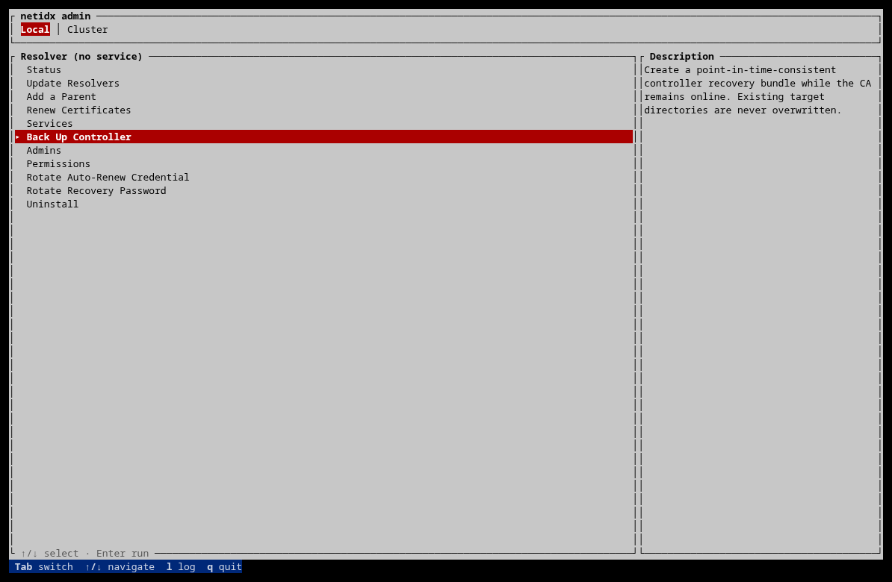

Controller Backup and Recovery
The controller’s ordinary serving key and autorenew credential are sealed to
its machine. That is useful after a disk is copied or stolen, but it means a
filesystem backup of the live host is not, by itself, a controller recovery
plan. netidx admin ca backup creates the portable, signed bundle needed to
move the CA to replacement hardware.
Recovery preserves the home CA and immutable controller UUID. It creates new machine-sealed serving and autorenew credentials, revokes the superseded controller serving certificates, and updates the controller’s address. It does not attempt to reuse a key sealed to the failed machine.
Prepare before an incident
When a CA is created, netidx creates a recovery vault slot and displays its password once. Store that password in an offline credential system under a different failure domain from the backup. Do not put it in the backup directory, the controller’s password manager, or the same envelope as the backup media.
On a healthy controller, check the recovery state with:
netidx admin ca recovery status
recovery slot: present means an off-box password can unlock the CA vault.
The on-box autorenew keytab is a separate recovery authority: while the
original machine still works, it can rotate a lost or exposed recovery
password without knowing the old one:
netidx admin ca recovery rotate
Record the newly printed password and retire the old copy immediately.
Take an online backup
The backup RPC is local-only. Run it as root on the controller, or select Back Up Controller on the TUI’s Local tab. It travels over the protected local Unix control socket, not the network listener, so no administrator password or session is involved.

The target is a new directory on the controller host:
netidx admin ca backup /srv/netidx-backups/controller-2026-07-12
Relative CLI paths are made absolute. The daemon refuses to overwrite an existing target, place a backup inside the live CA directory, follow a symlink inside the CA tree, or back up a legacy plaintext CA key. It stages the bundle beside the target and publishes the completed directory atomically.
The CA stays online. Durable controller mutations pause briefly while the daemon captures a point-in-time snapshot into memory; the potentially slow write to backup storage happens after that barrier is released. The command prints the CA fingerprint, controller UUID, network-map version, highest certificate serial, file/byte counts, and the SHA-256 of the manifest. Retain that output with the backup job record.
After creation, copy the whole directory to protected off-host storage using the organisation’s normal backup tooling. Preserve modes and keep the directory as a unit. A practical policy has at least one offline or immutable copy, rotation independent of the controller host, and regular restore drills.
What the bundle contains
The bundle is intentionally sufficient for CA recovery, not a disk image. It contains:
- the encrypted CA vault and CA certificate,
- issued-certificate records, revocation state, audit material, and the CA-authoritative network map,
admin-server.json,- the controller’s id-map config when it has that role,
- a self-contained resolver config when it has that role (permission includes are resolved and folded into the captured file), and
manifest.json, per-file SHA-256 hashes, andmanifest.sig, signed by the CA key.
It deliberately excludes:
- the controller serving private key and its
server/directory, - TPM/Secure-Enclave sidecars and the autorenew keytab,
- administrator login sessions,
- the local control socket, locks, temporary files, and
- unrelated data-plane TLS identities stored elsewhere on the host.
Possession of a bundle does not by itself expose the CA key: the vault remains encrypted. The separately stored recovery password is the portable credential that unlocks it. Protect both accordingly.
Recover onto replacement hardware
1. Fence the old controller
Before unlocking the backup, prove the old controller cannot return to the network. Power it off and remove its network access, revoke its cloud or hypervisor identity, or otherwise fence it using the infrastructure’s normal split-brain procedure.
Recovery revokes old serving certificates, but a running old controller still holds CA authority and may be partitioned from the new CRL. Software on the replacement host cannot establish that the failed host is dead. Treat fencing as a mandatory prerequisite, not a cleanup step.
2. Prepare clean destinations
Install the same netidx release on the replacement controller. Copy the backup directory to it without modifying its contents. Choose new paths for the CA and admin-server config; neither destination may already exist. Choose the new concrete admin listen address, including a non-standard port if used.
The current admin protocol uses an exact epoch match, so all admin servers, clients used for recovery, and certificate renewal daemons must speak the same protocol version. Ordinary compatible release changes do not advance that epoch, but using the same release removes ambiguity during a recovery.
3. Restore and rebind offline
Do not start the admin service yet. Run the recovery command locally on the replacement host:
netidx admin ca recover-controller \
--backup /srv/restore/controller-2026-07-12 \
--ca-dir /etc/netidx/ca \
--config /etc/netidx/admin-server.json \
--listen 10.0.0.20:4565 \
--recovery-password-stdin
Enter the recovery password on standard input. For automation, use
--recovery-password-file with a short-lived, mode-0600 secret file supplied
by the site’s secret manager; never place the password on the command line.
This is an offline operation. It does not open the admin network listener or push a CRL. It first verifies the manifest signature against the bundled CA certificate, every file hash and type, the certificate issuance index, the CA fingerprint, controller UUID, and map version. Only a verified bundle is restored.
Recovery then:
- restores the CA and admin-server configuration,
- restores role files beside the admin config as
recovered-resolver.jsonandrecovered-id-map.jsonwhere applicable, - validates the restored controller identity against the CA and network map,
- generates a new serving key and autorenew credential sealed to the replacement machine,
- issues a new serving certificate for the same controller UUID,
- revokes all superseded controller serving certificates and re-signs the local CRL, and
- writes the new listen address and machine-local paths.
If a mistyped recovery password stops the command after the pristine bundle has been restored, correct the password and repeat the same command. The restore recognizes that exact, unmodified intermediate state. It never treats an arbitrary existing CA or config directory as safe to overwrite.
--insecure-no-tpm exists for disposable test CAs. It writes the replacement
serving and autorenew secrets in plaintext; using it in production turns every
disk image and ordinary filesystem backup into CA key material.
4. Start through the normal service route
After the command succeeds, start the system service in the usual way for that host. Recovery itself does not supervise or restart it.
On startup the controller sends its UUID, new address, complete authoritative map, and current CRL to every registered node. Satellites validate the exact home CA and controller identity before persisting the new CA address, map, and CRL. Their periodic map refresh also rereads the controller address, so the controller can move without restarting every satellite.
The startup fanout may be partial if a site is offline. Once the failed targets are reachable, repeat the idempotent reconciliation from an administrator workstation:
netidx admin ca reconcile-controller \
--server 10.0.0.20:4565 \
--admin operations \
--accept-glyph 'THE CONFIRMED GROUPED FINGERPRINT'
The command prints one operation ID and identifies each failed target by immutable server UUID and address. Repeating it is the supported manual retry; there is no automatic background job that can surprise an operator after a partition heals.
5. Validate and finish the host rebuild
At minimum:
- compare
netidx admin ca fingerprintwith the recorded home-CA glyph, - connect with the TUI or
netidx admin loginand inspectnetidx admin ca servers, - confirm the controller row has the original UUID and the new address,
- confirm the old controller serving certificates are revoked,
- verify one administrative read and one harmless, planned mutation at each reachable site,
- reconcile any targets reported by startup or the explicit command, and
- take a fresh backup of the recovered controller.
Administrator sessions are not restored; operators log in again. Any other TLS identity co-located on the failed host had its own machine-sealed private key and must be re-enrolled. In particular, validate or re-enroll the local resolver and id-map data-plane identities before declaring the replacement host complete.
Recovery drills
A backup is proven only by a restore test. A useful scheduled drill restores onto an isolated replacement VM, verifies the signed bundle, confirms the preserved CA fingerprint and controller UUID, and stops before allowing the test controller onto the production network. Record the netidx release, manifest digest, recovery duration, required infrastructure access, and every manual step. Destroy the restored test secrets when the drill is complete.